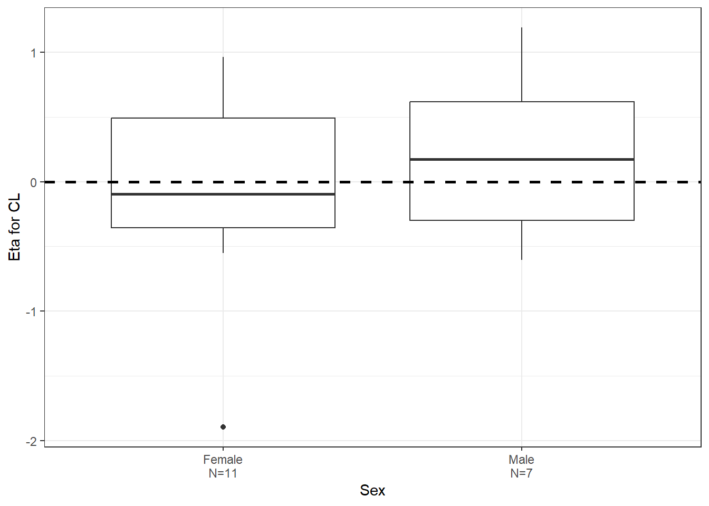
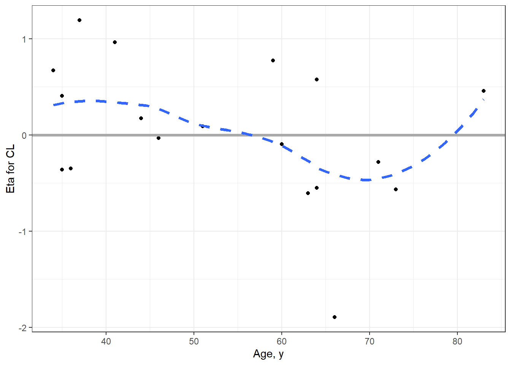
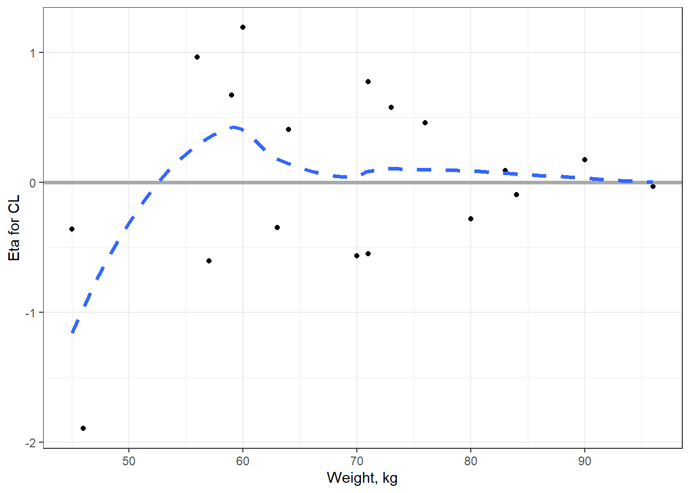
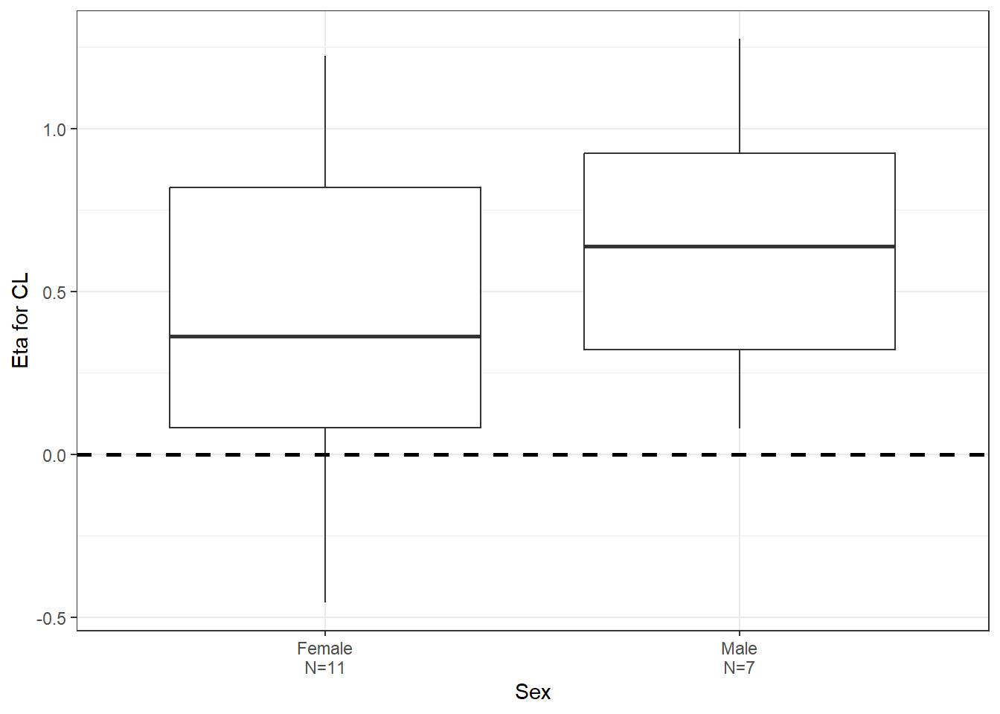
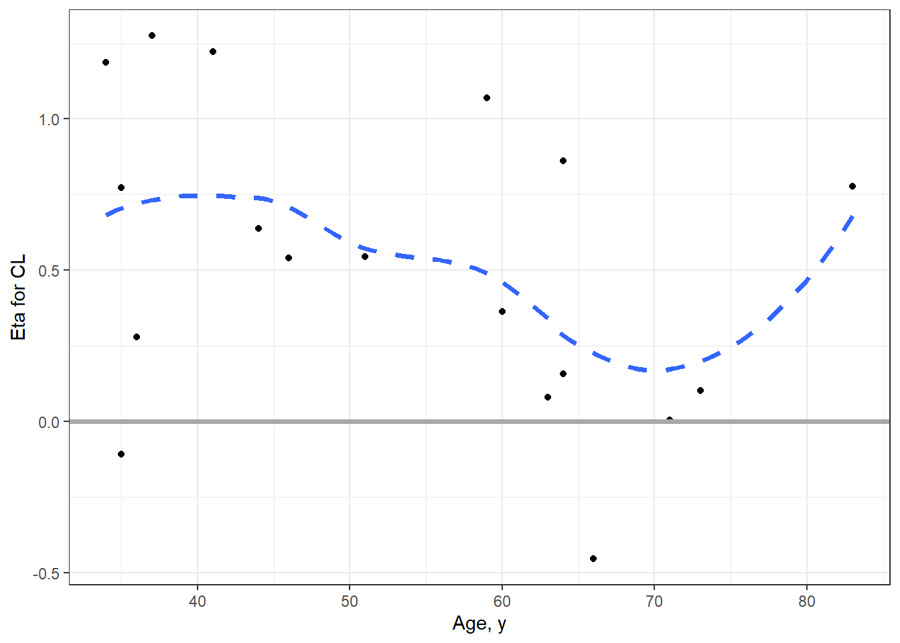
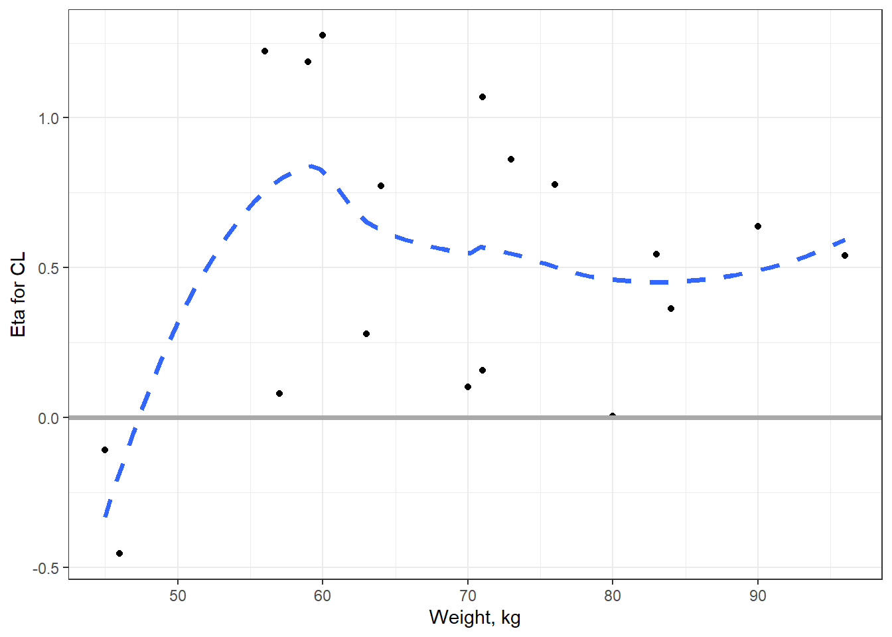
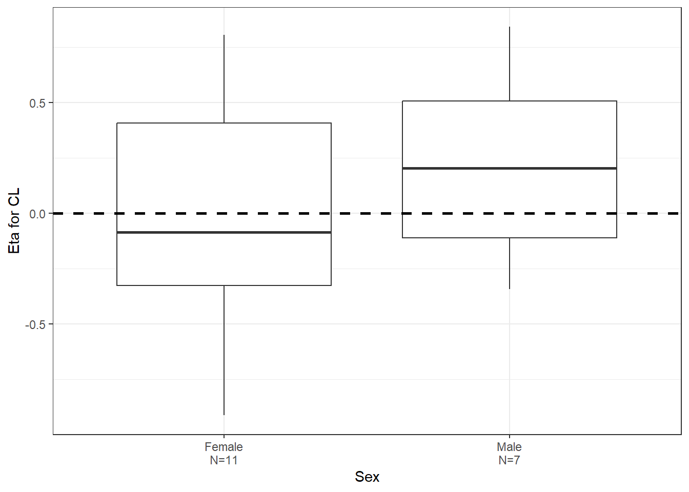
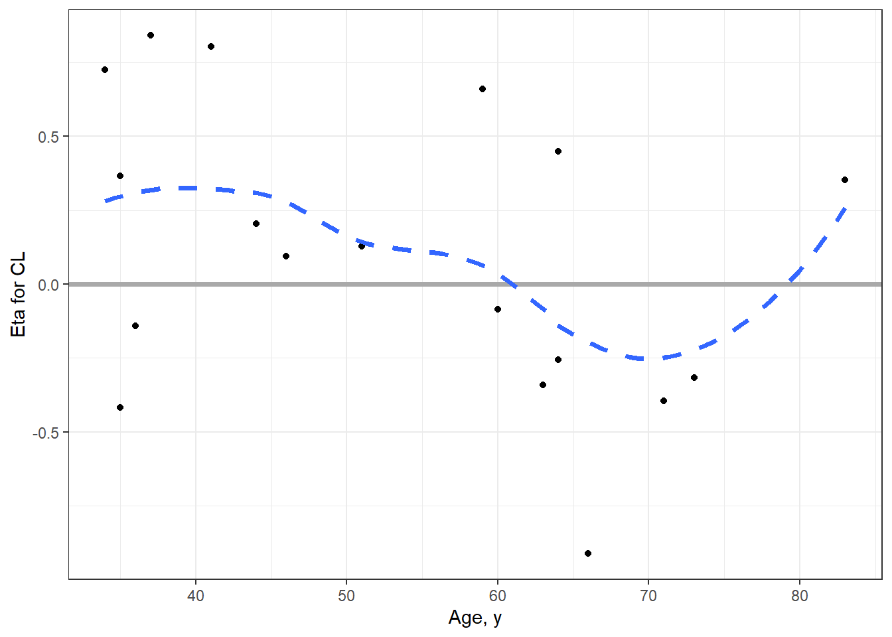
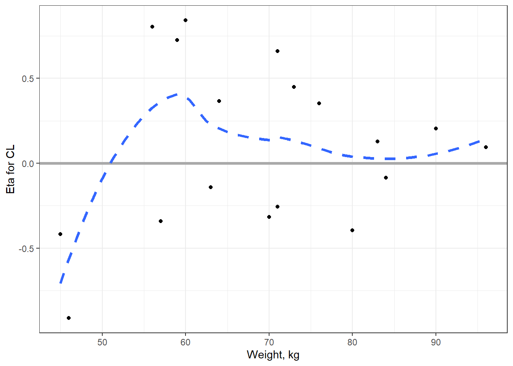

Pharmacokinetics of sufentanil after epidural administration
Authors
Pawel Wiczling
Agnieszka Bienert
Paulina Okuńska
Agnieszka Borsuk-de Moor
Justyna Ber
Published
October 12, 2023
Introduction
Pharmacokinetics of sufentanil after epidural administration:
Code
library(pracma)library(bbr)library(dplyr)library(ggplot2)library(patchwork)library(mrgsolve)library(vpc)library(pmplots)library(scales)library(data.table)library(tidyverse)library(glue)library(whisker)library(here)library(pmtables)# library(mrgmisc)source("functions/resampling_functions.R") # from mrgmisc
Settings:
Code
data_dir <-"../data/derived"model_dir <-"../model/nonmem/basic"figure_dir <-"../deliv/figures"# user specific settingsoptions(bbr.bbi_exe_path ="C:/Users/pawel/AppData/Roaming/bbi/bbi.exe")bbi_init(.dir = model_dir, # the directory to create the bbi.yaml in.nonmem_dir ="C:/", # location of NONMEM installation.nonmem_version ="nm74g64", # default NONMEM version to use.bbi_args =list(mpi_exec_path ="C:/nm74g64/run/psexec",parafile ="C:/nm74g64/run/fpiwini8.pnm",parallel =TRUE,threads =4 ))
Model 2. 2 cmp dispos. model (fixed), 1-st order abs., F estimated. Disposition PK parameters were fixed based on https://pubmed.ncbi.nlm.nih.gov/26105145/: VC = 7.90 l, VT = 481 L, Cl = 45.3 L/h, and Q = 38.3 L/h
Code
mod2 <-new_model(file.path(model_dir, 2), .overwrite =TRUE)submit_model(mod2, .mode ="local")mod2 <- mod2 %>%add_tags("2 cmp dispos. model (fixed), 1-st order abs., F estimated")%>%add_tags("etas estiamted for CL/F")#mod2 <- mod2 %>% add_notes(" ")
Model 3. 2 cmp dispos. model (fixed), 1-st order 2-cmp abs., F=1. Disposition PK parameters were fixed based on https://pubmed.ncbi.nlm.nih.gov/26105145/: VC = 7.90 l, VT = 481 L, Cl = 45.3 L/h, and Q = 38.3 L/h
Code
mod3 <-new_model(file.path(model_dir, 3), .overwrite =TRUE)submit_model(mod3, .mode ="local")mod3 <- mod3 %>%add_tags("2 cmp dispos. model (fixed), 1-st order 2-cmp abs., F=1")%>%add_tags("etas estiamted for CL/F")#mod3 <- mod3 %>% add_notes(" ")
Model 4. 2 cmp dispos. model (fixed), 1-st order 2-cmp abs., F estimated. Disposition PK parameters were fixed based on https://pubmed.ncbi.nlm.nih.gov/26105145/: VC = 7.90 l, VT = 481 L, Cl = 45.3 L/h, and Q = 38.3 L/h
Code
mod4 <-new_model(file.path(model_dir, 4), .overwrite =TRUE)submit_model(mod4, .mode ="local")mod4 <- mod4 %>%add_tags("2 cmp dispos. model (fixed), 1-st order 2-cmp abs., F estimated")%>%add_tags("etas estiamted for CL/F")#mod4 <- mod4 %>% add_notes(" ")
Model 5. 3 cmp dispos. model (fixed), 1-st order abs., F estimated. Disposition PK parameters were fixed based on https://pubmed.ncbi.nlm.nih.gov/8533912/: VC = 14.6, VP1 = 66, VP2 = 608, Cl = 52.8 L/h, and Q = 102 L/h i 40.8 L/h
Code
mod5 <-new_model(file.path(model_dir, 5), .overwrite =TRUE)submit_model(mod5, .mode ="local")mod5 <- mod5 %>%add_tags("3 cmp dispos. model (fixed), 1-st order abs., F estimated")%>%add_tags("etas estiamted for CL/F")#mod5 <- mod5 %>% add_notes(" ")
idata <-distinct(join_df,ID,.keep_all =TRUE) idata<-idata %>%mutate(SEXC=case_when( SEX =="1"~"Male", SEX =="2"~"Female",.default =NA))etas <-c("ETA1//Eta for CL","ETA2//Eta for V1","ETA3//Eta for Q","ETA4//Eta for V2","ETA5//Eta for KA")p_cat<-eta_cat(idata, c("SEXC//Sex"), etas)p_cont1<-eta_cont(idata, c("AGE//Age, y"), etas)p_cont2<-eta_cont(idata, c("WT//Weight, kg"), etas)# cov_sex<-(p_cat[[1]]+p_cat[[2]])/(p_cat[[3]]+p_cat[[4]])/(p_cat[[5]]+plot_spacer())# cov_age<-(p_cont1[[1]]+p_cont1[[2]])/(p_cont1[[3]]+p_cont1[[4]])/(p_cont1[[5]]+plot_spacer())# cov_wt <-(p_cont2[[1]]+p_cont2[[2]])/(p_cont2[[3]]+p_cont2[[4]])/(p_cont2[[5]]+plot_spacer())cov_sex<-p_cat[[1]]cov_age<-p_cont1[[1]]cov_wt <-p_cont2[[1]]ggsave(paste0(figure_dir, "/model", basename(mod_to_plot$absolute_model_path), "/" ,"cov_sex" , ".png"),plot=cov_sex, width=12, height=10, dpi=600, units="cm")ggsave(paste0(figure_dir, "/model", basename(mod_to_plot$absolute_model_path), "/" ,"cov_age" , ".png"),plot=cov_age, width=12, height=10, dpi=600, units="cm")ggsave(paste0(figure_dir, "/model", basename(mod_to_plot$absolute_model_path), "/" ,"cov_wt" , ".png"),plot=cov_wt, width=12, height=10, dpi=600, units="cm")print(cov_sex)

Code
print(cov_age)

Code
print(cov_wt)

Model 2
2 cmp dispos. model (fixed), 1-st order abs., F estimated, etas estiamted for CL/F. Disposition PK parameters were fixed based on https://pubmed.ncbi.nlm.nih.gov/26105145/: VC = 7.90 l, VT = 481 L, Cl = 45.3 L/h, and Q = 38.3 L/h
idata <-distinct(join_df,ID,.keep_all =TRUE) idata<-idata %>%mutate(SEXC=case_when( SEX =="1"~"Male", SEX =="2"~"Female",.default =NA))etas <-c("ETA1//Eta for CL","ETA2//Eta for V1","ETA3//Eta for Q","ETA4//Eta for V2","ETA5//Eta for KA")p_cat<-eta_cat(idata, c("SEXC//Sex"), etas)p_cont1<-eta_cont(idata, c("AGE//Age, y"), etas)p_cont2<-eta_cont(idata, c("WT//Weight, kg"), etas)# cov_sex<-(p_cat[[1]]+p_cat[[2]])/(p_cat[[3]]+p_cat[[4]])/(p_cat[[5]]+plot_spacer())# cov_age<-(p_cont1[[1]]+p_cont1[[2]])/(p_cont1[[3]]+p_cont1[[4]])/(p_cont1[[5]]+plot_spacer())# cov_wt <-(p_cont2[[1]]+p_cont2[[2]])/(p_cont2[[3]]+p_cont2[[4]])/(p_cont2[[5]]+plot_spacer())cov_sex<-p_cat[[1]]cov_age<-p_cont1[[1]]cov_wt <-p_cont2[[1]]ggsave(paste0(figure_dir, "/model", basename(mod_to_plot$absolute_model_path), "/" ,"cov_sex" , ".png"),plot=cov_sex, width=12, height=10, dpi=600, units="cm")ggsave(paste0(figure_dir, "/model", basename(mod_to_plot$absolute_model_path), "/" ,"cov_age" , ".png"),plot=cov_age, width=12, height=10, dpi=600, units="cm")ggsave(paste0(figure_dir, "/model", basename(mod_to_plot$absolute_model_path), "/" ,"cov_wt" , ".png"),plot=cov_wt, width=12, height=10, dpi=600, units="cm")print(cov_sex)

Code
print(cov_age)

Code
print(cov_wt)

Model 4
2 cmp dispos. model (fixed), 1-st order 2-cmp abs., F estimated, etas estiamted for CL/F. Disposition PK parameters were fixed based on https://pubmed.ncbi.nlm.nih.gov/26105145/: VC = 7.90 l, VT = 481 L, Cl = 45.3 L/h, and Q = 38.3 L/h
idata <-distinct(join_df,ID,.keep_all =TRUE) idata<-idata %>%mutate(SEXC=case_when( SEX =="1"~"Male", SEX =="2"~"Female",.default =NA))etas <-c("ETA1//Eta for CL","ETA2//Eta for V1","ETA3//Eta for Q","ETA4//Eta for V2","ETA5//Eta for KA")p_cat<-eta_cat(idata, c("SEXC//Sex"), etas)p_cont1<-eta_cont(idata, c("AGE//Age, y"), etas)p_cont2<-eta_cont(idata, c("WT//Weight, kg"), etas)# cov_sex<-(p_cat[[1]]+p_cat[[2]])/(p_cat[[3]]+p_cat[[4]])/(p_cat[[5]]+plot_spacer())# cov_age<-(p_cont1[[1]]+p_cont1[[2]])/(p_cont1[[3]]+p_cont1[[4]])/(p_cont1[[5]]+plot_spacer())# cov_wt <-(p_cont2[[1]]+p_cont2[[2]])/(p_cont2[[3]]+p_cont2[[4]])/(p_cont2[[5]]+plot_spacer())cov_sex<-p_cat[[1]]cov_age<-p_cont1[[1]]cov_wt <-p_cont2[[1]]ggsave(paste0(figure_dir, "/model", basename(mod_to_plot$absolute_model_path), "/" ,"cov_sex" , ".png"),plot=cov_sex, width=12, height=10, dpi=600, units="cm")ggsave(paste0(figure_dir, "/model", basename(mod_to_plot$absolute_model_path), "/" ,"cov_age" , ".png"),plot=cov_age, width=12, height=10, dpi=600, units="cm")ggsave(paste0(figure_dir, "/model", basename(mod_to_plot$absolute_model_path), "/" ,"cov_wt" , ".png"),plot=cov_wt, width=12, height=10, dpi=600, units="cm")print(cov_sex)

Code
print(cov_age)

Code
print(cov_wt)

Model 5
3 cmp dispos. model (fixed), 1-st order abs., F estimated, etas estimated for CL/F. Disposition PK parameters were fixed based on https://pubmed.ncbi.nlm.nih.gov/8533912/: VC = 14.6, VP1 = 66, VP2 = 608, Cl = 52.8 L/h, and Q = 102 L/h i 40.8 L/h